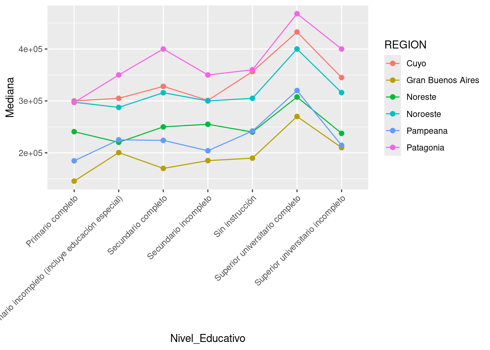
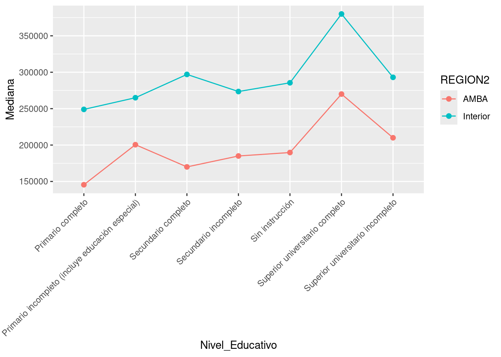
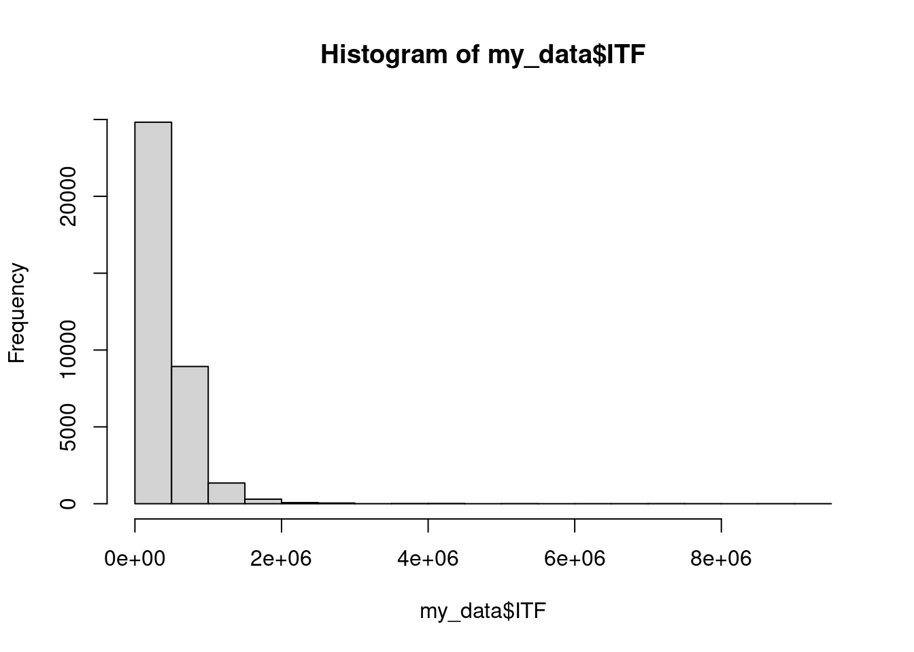
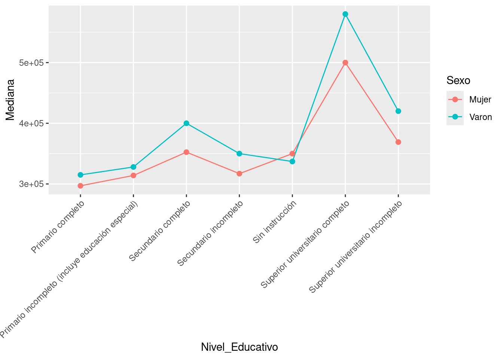
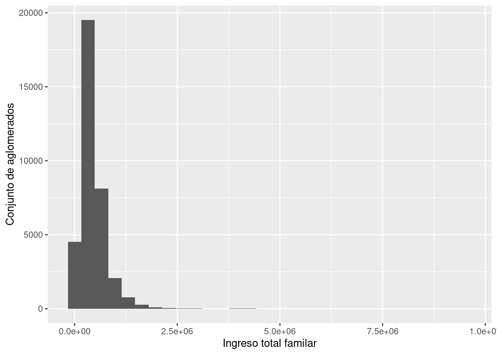
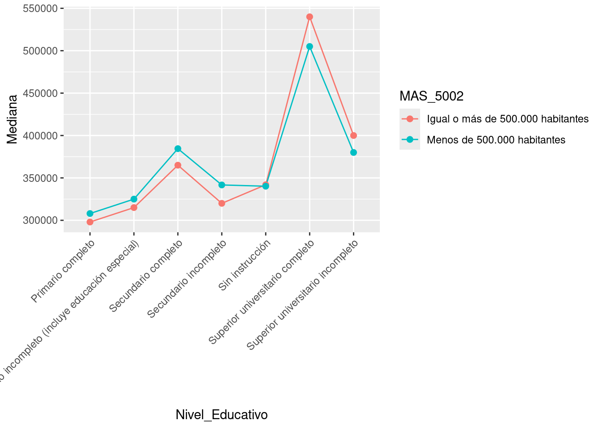

En el presente capitulo se llevara a cabo un análisis cuantitativo referido al vinculo entre el nivel educativo y el ingreso con diversos factores tales como el sexo, la región geográfica y la aglomeración. Para tal proposito, se utilizaran datos del Instituto Nacional de Estadística y Censos (INDEC)(Censos y estadísticas 2023).
7.2 Datos
Los datos que hemos usado para este análisis provienen del indec. Corresponden a la encuesta permanente de hogares para el 4to trimestre del 2023.
7.3Preguntas de investigación
¿En qué medida influye el nivel educativo en el ingreso de la persona?
¿Es lo mismo para todas las provincias y/o regiones del país? ¿Es igual en AMBA y en el Interior?
¿Es igual para los dos sexos?
¿Es lo mismo en ciudades grandes (+500) y en las ciudades chicas?
Variables a analizar en relación al nivel educativo (NIVEL_ED) y el ingreso (ITF):
Sexo (CH04)
Regiones (REGION)
Ciudades grandes y cuidades chicas (MAS_500)
7.4Herramientas de análisis
Usamos el lenguaje R (2024) con los paquetes de tidyverse. (Wickham et al. 2019). Usamos el sistema Quarto (Allaire et al. (2024)) para su publicación.
7.5 Procedimiento
7.6
7.7 Análisis descriptivo
7.7.1 Regiones
En la siguiente Tabla 7.4 , se puede observar que:
En cuanto a Cuyo, la comparacion entre la media ($456198.7) y la mediana ($ 396000) indica que, al ser menor la mediana que la media, una parte predominante de la poblacion tiene ingresos menores al promedio. Teniendo en cuanta los altos valores de dispersion del desvio ($230544.3) y la desviacion ($303319.0 ) y que la mediana es más baja que la media, se puede delucidar que hay una gran variabilidad y por lo tanto, existe una pequeña parte de la poblacion que tiene ingresos muy altos lo que a su vez significa que hay una gran desigualdad en cuanto a los ingresos en la region de Cuyo.
En cuanto al Gran Buenos Aires, la comparacionentre la media ($500974.2) y la mediana ($390000) indica que, al ser menor la mediana que la media, una parte predominante de la poblacion tiene ingresos menores al promedio. Teniendo en cuanta los altos valores de dispersion del desvio ($262420.2) y la desviacion ($540662.2) y que la mediana es más baja que la media, se puede deducir que hay una gran variabilidad en los ingresos, y por lo tanto, existe una pequeña parte de la poblacion que tiene ingresos muy altos, lo que a su vez significa que hay una gran desigualdad en cuanto a los ingresos en la region del Gran Buenos Aires.
En cuanto al Noreste, la comparacion entre la media ($373542.2 ) y la mediana ($310000) indica que, al ser menor la mediana que la media, una parte predominante de la poblacion tiene ingresos menores al promedio. Teniendo en cuanta los altos valores de dispersion del desvio($ 192738.0) y la desviacion ($278537.8) y que la mediana es más baja que la media, se puede deducir que hay una gran variabilidad en los ingresos, y por lo tanto, existe una pequeña parte de la poblacion que tiene ingresos muy altos, lo que a su vez significa que hay una gran desigualdad en cuanto a los ingresos en la region del Noreste.
En cuanto al Noroeste, la comparacion entre la media ($411348.6 ) y la mediana ($350000) indica que, al ser menor la mediana que la media, una parte predominante de la poblacion tiene ingresos menores al promedio. Teniendo en cuanta los altos valores de dispersion del desvio($207564.0) y la desviacion ($288345.9 ) y que la mediana es más baja que la media, se puede deducir que hay una gran variabilidad en los ingresos, y por lo tanto, existe una pequeña parte de la poblacion que tiene ingresos muy altos, lo que a su vez significa que hay una gran desigualdad en cuanto a los ingresos en la region del Noroeste.
En cuanto a la región Pampeana, la comparacion entre la media ($431613.9 ) y la mediana ($ 340000) indica que, al ser menor la mediana que la media, una parte predominante de la poblacion tiene ingresos menores al promedio. Teniendo en cuanta los altos valores de dispersion del desvio($233577.7) y la desviacion($366175.3 ) y que la mediana es más baja que la media, se puede deducir que hay una gran variabilidad en los ingresos, y por lo tanto, existe una pequeña parte de la poblacion que tiene ingresos muy altos, lo que a su vez significa que hay una gran desigualdad en cuanto a los ingresos en la region Pampeana.
En cuanto a la Patagonia, la comparacion entre la media ($563456.0 ) y la mediana ($460000) indica que, al ser menor la mediana que la media, una parte predominante de la poblacion tiene ingresos menores al promedio. Teniendo en cuanta los altos valores de dispersion del desvio($281694.0) y la desviacion($544746.9 ) y que la mediana es más baja que la media, se puede deducir que hay una gran variabilidad en los ingresos, y por lo tanto, existe una pequeña parte de la poblacion que tiene ingresos muy altos, lo que a su vez significa que hay una gran desigualdad en cuanto a los ingresos en la region de la Patagonia.
En terminos generales, se puede observar en base a la media (promedio de ingresos por región), que los ingresos más altos pertenecen a la region de la Patagonia (con un ingreso promedio de $563456), dejando al Noreste como la región con menor ingreso promedio (con $373542).
Por otro lado, la mediana más alta pertenece a la Patagonia con $460000 y la más baja al Noreste con $310000, es decir que la mitad de la población de cada region gana por debajo de ese monto y la otra por arriba de ese monto. En cuanto a la desviación, es decir el promedio de cuanto se alejan los valores con respecto a la media, la más alta pertenece a la Patagonia con $544746.9 y la más baja al Noreste con $278537.8. En cuanto al desvío, el promedio de cuanto se alejan los valores de la mediana, la más alta pertenece a la Patagonia con $281694 y la más baja a Noreste con $192738.
Es asi, que podemos concluir que en todas las regiones, la media es mayor que la mediana, lo cual indica una distribución sesgada a la derecha, es decir, sugiere la presencia de individuos con ingresos significativamente altos. La diferencia en los ingresps es particularmente pronunciada en el Gran Buenos Aires y Patagonia, en donde hay una mayor desigualdad. En este sentido, en cuanto a la variabilidad, la desviación estándar y el desvio tambien son más altos tanto en Gran Buenos Aires como en la Patagonia, indicando una mayor dispersión en los ingresos. Por otro lado, la region Noreste y Noroeste muestran menos variabilidad en comparación con el resto delas regiones.
En el siguiente Figura 7.4 se destaca en primer lugar la region de la Patagonia la presenta en todos los niveles educativos de manera consistente las medianas de ingresos más altas. Esto sugiere que las personas en esta región tienen, en general, mejores oportunidades económicas, mas alla de su nivel educativo.
En segundo lugar se destaca la region de Cuyo la cual tiene medianas de ingresos intermedias, situándose por debajo de la Patagonia y, en algunos casos, comparables con otras regiones como por ejemplo la region Noroeste.
En tercer lugar, cabe observar las regiones Noreste y Noroeste, las cuales muestran una tendencia similar con medianas de ingresos que son más altas que Gran Buenos Aires y la region Pampeana, pero más bajas que la Patagonia; no obstante, se observa una pequeña diferencia entre ambas regiones en donde el Noroeste tiende a tener ingresos un poco más altos que el Noreste.
En cuartolugar, se puede reparar en que la region Pampeana presenta medianas de ingresos que son superiores a las de Gran Buenos Aires y la segunda con ingresos mas bajos.
En ultimo lugar, se puede advertir que en Gran Buenos Aires las medianas de ingresos las más bajas en forma constante en la mayoría de los niveles educativos, particularmente en niveles bajos como “Primario incompleto” y “Sin instrucción”. Esto indica que las oportunidades económicas para personas con menores niveles educativos son más limitadas en esta región.
En cuanto a los niveles educativos:
Nivel 0-Sin Instrucción: Esta categoría muestra ingresos medianos que son relativamente bajos en todas las regiones; sin embargo, la Patagonia es la región con mayores ingresos.
Nivel 1-Primario Incompleto: Las personas con educación primaria incompleta tienen las medianas de ingresos más bajas en todas las regiones. Gran Buenos Aires presenta los ingresos más bajos, mientras que Patagonia los más altos.
Nievel 2-Primario Completo: Se observa una ligera mejora en las medianas de ingresos en comparación con el nivel anterior. Las diferencias entre las regiones siguen una tendencia similar a la categoria “sin instruccion”, en donde lidera la Patagonia.
Nivel 3-Secundario Incompleto: existe una tendencia casi constante en todas las regiones con respecto a la medianas de ingresos en los niveles de secundario completo e incompleto, salvo en la Patagonia. En esta ultima, se observa un marcado descenso desde la categoria secundario completo a secundario incompleto, es decir, aquellas personas que no terminaron de instruirse en la educacion secundaria tendran un ingreso mas bajo que aquellos que si.
Nivel4- Secundario Completo: A medida que aumenta el nivel educativo, también lo hacen las medianas de ingresos en todas las regiones, salvo en el Gran Buenos Aires, en donde se nota un descenso en comparacion del nivel 1 (primario incompleto)
Nivel 5-Superior Universitario Incompleto: en esta categoria se nota un marcado descenso en los ingresos en comparacion a quienes terminaron su educacion universitaria, incluso una diferencia mas categorica entre quienes termianron el secundario y quienes no.
Nivel 6- Secundario Completo: Las personas con educación universitaria completa tienen una mayor ingreso que el resto de las categorias. En esta cabe destacar a la Patagonia como la que tiene los ingresos más altos y a Gran Buenos Aires como aquella con ingresos mas bajos, seguida de cerca por la region Pampeana.
En conclusion, se puede observar una clara ventaja de la region Patagonica en cuanto a ingresos, mas alla de la categoria educativa que se observe. Por otro lado, la region del Gran Buenos Aires es la que mas claramente se encuentra en desventaja que el resto de las regiones en todas los niveles educativos.
##6#| echo: false#| label: fig-regeduitf#| fig-cap: "Gráfico vinculo entre nivel educativo e ingreso por región"source(here::here("R/variables-nivel-educativo.R"))temp_df |>mutate(Nivel_Educativo =nivel_educativo(NIVEL_ED)) |>group_by(Nivel_Educativo,REGION) |>summarize(Mediana =median(ITF) ) |>ungroup() |>ggplot(aes(Nivel_Educativo,Mediana, color = REGION, group=REGION))+geom_line()+geom_point(size=2)+theme(axis.text.x =element_text(angle =45, vjust =1, hjust =1))
`summarise()` has grouped output by 'Nivel_Educativo'. You can override using
the `.groups` argument.

En la siguiente Tabla 7.2 se puede observar como el nivel educativo evidentemente influye en los ingresos aunque no es lo mismo para todas las regiones. En el nivel 0 (Sin instruccion) quien tiene la mediana de ingresos mas alta es la Patagonia con $360000 y quien tiene la mediana de ingresos mas baja es Gran Buenos Aires con $189750.
En el nivel 1 (Primario incompleto) quien tiene la mediana de ingresos mas alta es la Patagonia con $350000 y quien tiene la mediana de ingresos mas baja es el Gran Buenos Aires con $200500.
En el nivel 2 (Primario completo) quien tiene la mediana de ingresos mas alta es Cuyo con $300000 seguido de cerca por el Noroeste ($297500) y la Patagonia ($297000) y quien tiene la mediana de ingresos mas baja es el Gran BuenosAires con $145500.
En el nivel 3 (Secundario incompleto) quien tiene la mediana de ingresos mas alta es la Patagonia con $350000 y quien tiene la mediana de ingresos mas baja es el Gran Bueno Aires con $185000.
En el nivel 4 (Secundario completo) quien tiene la mediana de ingresos mas alta es la Patagonia con $400000 y quien tiene la mediana de ingresos mas baja es el Gran Buenos Aires con $170000.
En el nivel 5 (Universitario incompleto) quien tiene la mediana de ingresos mas alta es la Patagonia con $400000 y quien tiene la mediana de ingresos mas baja es el Gran Buenos Aires con $210000.
En el nivel 6 (Universitario completo) quien tiene la mediana de ingresos mas alta es la Patagonia con $468000 y quien tiene la mediana de ingresos mas baja es el gran Buenos Aires con $270000.
Se observa una clara tendencia de la Patagonia en liderar la lista con los ingresos mas altos de todas las regiones. Sin embargo, el Gran Buenos Aires tienen el puesto de ser la region con mas bajos ingresos en todos los niveles educativos, por lo que podemos advertir que existe una gran disparidad entre estas regiones. Ademas se puede reparar en el hecho de que el ingreso aumenta a medida que se avanza en el nivel educativo. Es asi que podemos concluir que si bien el nivel educativo tiene una fuerte influencia en los ingresos de las personas, la gran disparidad interregional de ingresos puede llegar a sugerir que existen otros factores vinculados particualrmente a cada region que hace posible esta gran desigualdad.
Tabla 7.2
`summarise()` has grouped output by 'Nivel_Educativo'. You can override using
the `.groups` argument.
# A tibble: 42 × 3
# Groups: Nivel_Educativo [7]
Nivel_Educativo REGION Mediana
<dbl> <chr> <dbl>
1 0 Cuyo 356430
2 0 Gran Buenos Aires 189750
3 0 Noreste 240000
4 0 Noroeste 305000
5 0 Pampeana 242000
6 0 Patagonia 360000
7 1 Cuyo 305000
8 1 Gran Buenos Aires 200500
9 1 Noreste 220250
10 1 Noroeste 287500
# ℹ 32 more rows
Por otro lado, resulta interesante hacer una nueva recategorizacion geografica para analizar y comparar la influencia del nivel educativo en el ingreso por un lado en el AMBA (Gran Buenos Aires) y por otro lado en el Interior del pais (Cuyo, Noreste, Noroeste, Pampeana y Patagonia). Es asi que analizando la Figura 7.1 , se puede observar una clara ventaja en el Interior del pais por sobre AMBA en cuanto ingresos. En otras palabras, si bien es evidente que a medida que se avanza en el nivel educativo , los ingresos van en aumento, hay una clara superioridad de las oportunidades que ofrece el interior sobre el AMBA. Si bien hay una tendencia pareja entre ambas categorias geograficas, surge una evidente diferencia en el nivel “Secundario completo”: mientras que en Interior hay un aumento en los ingresos, en el AMBA hay un indudable descenso en el mismo.
`summarise()` has grouped output by 'Nivel_Educativo'. You can override using
the `.groups` argument.

Figura 7.1: Gráfico vinculo entre nivel educativo e ingreso por región
Analisis inferencial
H0: el nivel educativo influye en el ingreso de la persona en igual medida tanto en el AMBA como en el Interior.
H1: el nivel educativo influye mas en el ingreso de Interior que en el del AMBA.
Tabla 7.3: Resultado del test de T
7.7.2Sexo
En la ?tbl-sexoedu, se puede observar que en el nivel “Sin Instruccion” se ve una ligera predominancia de varones. En el nivel “Primario incompleto” y “Primario completo” vuelven a predominar los varones pero con poca diferencia sobre las mujeres. En el nivel “Secundario incompleto” predominana los varores. En el nivel “Secundario completo” ocurre un cambio y hay mas mujeres que varones. En el nivel “Universitario incompleto”como “Universitario completo” hay una clara predominancia de las mujeres. En resumen, en los niveles iniciales tienden a predomianr la presencia de varones y en los niveles sueriores, hay una tendencia predominantemente de mujeres.
##13#| echo: false#| label: tbl-sexoedu#| fig-cap: "Tabla nivel educativo según el sexo"my_data <- my_data |>mutate(Nivel_Educativo = NIVEL_ED) |>mutate(Sexo =case_when( CH04 =="1"~"Varon", CH04 =="2"~"Mujer",TRUE~"desconocido" ))table(my_data$Sexo, my_data$Nivel_Educativo)
Aclaracion: En Figura 7.2, por un error de tipeo, hay un salario de 101.250.000. Este factor hara que los datos y sus resultados se vean erroneamente modificados por lo que se filtrara y seleccionara el ingreso desde 0 hasta el máximo previo a error :10000000.
Aclarado esto, se observa un sesgo a la derecha, lo cual indica que los ingresos se encuentran concentrados en su mayoria en los rangos mas bajos y que hay algunos valores extremadamente altos. Es decir, que hay una gran cantidad de personas con ingresos bajos y unos pocos con ingresos muy altos.

Figura 7.2: Histograma ITF
En Tabla 7.1, se puede observar que en cuanto a la media es ligeramente superior en los varones($461565.1) en comparación con las mujeres($437146.8). Esto sugiere que, en promedio, los varones ganan más que las mujeres.
En cuanto a la desviacion, tanto de los varones ($402943.0) como de las mujeres ($382566.2) se puede ver que los ingresos de los varones muestran una mayor dispersión que los de las mujeres, indicando una mayor variabilidad en los ingresos de aquellos. Esto puede significar que hay una mayor brecha entre los ingresos altos y bajos entre los varones en comparación con las mujeres.
En cuanto a la mediana, es superior para los varones. En este caso, la mediana para los varones es de $380000, mientras que para las mujeres es de $350000.
En cuanto al desvio, las mujeres tiene un valor de $222390 y los varones de $237216. Nuevamente, los varones tienen un mayor desvío lo cual refuerza la idea de una mayor variabilidad en sus ingresos.
En la categoria “Mujeres” se puede observar que tienen ingresos ligeramente menores en promedio en comparacion con los varones; en cambio, muestran una distribución de ingresos más concentrada y menos dispersa.
En la categoria de “Varones” se puede observar que estos tiene los ingresos más altos en promedioen comparacion a las mujeres; sin embargo, experimentan una mayor variabilidad en sus ingresos.
Tabla 7.4
# A tibble: 2 × 5
Sexo Media Desviacion Mediana Desvio
<chr> <dbl> <dbl> <dbl> <dbl>
1 Mujer 437147. 382566. 350000 222390
2 Varon 461565. 402943. 380000 237216
En este Figura 7.4, se puede observar que, en cuanto al sexo, hay una clara predominancia de los varones sobre las mujeres en sus ingresos. Es decir que hay una tendencia a que los varones ganen mas que las mujeres teniendo el mismo nivel educativo. En cuanto al nivel educativo se observa que aumenta los ingresos en los niveles secundarios y universitario completos en comparacion con los mismos niveles incompleto. Sin embargo, cabe dar cuenta de que en el nivel primario, hay una tendencia a que baje el salario en el nivel completo en comparacion con el incompleto. En otras palabras, los ingresos son mas bajos en aquellos que terminaron la primaria que en quienes no la finalizaron. En el el nivel “Sin instruccion”, se observa la unica ventaja de las mujeres en cuanto a ingresos.
`summarise()` has grouped output by 'Nivel_Educativo'. You can override using
the `.groups` argument.

Figura 7.3: Gráfico vinculo entre nivel educativo e ingreso por sexo
A partir de la siguiente Tabla 7.5 veremos como el nivel educativo influye en los ingresos aunque no es lo mismo para varones y mujeres.
En el nivel 0 (Sin instruccion) quien tiene la mediana de ingresos mas alta son las mujeres con $350000 y quien tiene la mediana de ingresos mas baja son los varones con $337000. Esta pequeña diferencia indica que en este nivel educativo el ingreso es relativamente similar entre ambos sexos.
En el nivel 1 (Primario incompleto) quien tiene la mediana de ingresos mas alta son los varones con $ 328000 y quien tiene la mediana de ingresos mas baja son las mujeres con $314000. La diferencia sugiere que los varones tienen una ligera ventaja en ingresos en este nivel educativo.
En el nivel 2 (Primario completo) quien tiene la mediana de ingresos mas alta son los varones con $315000 y quien tiene la mediana de ingresos mas baja son las mujeres con $297000. La diferencia en ingresos es consistente con la tendencia observada en el nivel primario incompleto.
En el nivel 3 (Secundario incompleto)quien tiene la mediana de ingresos mas alta son los varones con $350000 y quien tiene la mediana de ingresos mas baja son las mujeres con $317000.
En el nivel 4 (Secundario completo) quien tiene la mediana de ingresos mas alta son los varones con $400000 y quien tiene la mediana de ingresos mas baja son las mujeres con $352430. La diferencia es notable, indicando que completar la educación secundaria ofrece un mayor beneficio en ingresos para los varones.
En el nivel 5 (Universitario incompleto) quien tiene la mediana de ingresos mas alta son los varones con $420000 y quien tiene la mediana de ingresos mas baja son las mujeres con $369000. La diferencia en ingresos sigue siendo ventajosa para los varones.
En el nivel 6 (Universitario completo) quien tiene la mediana de ingresos mas alta son los varones con $ 580000 y quien tiene la mediana de ingresos mas baja son las mujeres con $500000.Al alcanzar este nivel, la brecha de ingresos entre varones y mujeres es la más amplia.
En resumen podemos observar que, como en la variable anterior, el ingreso aumenta a medida que se avanza en el nivel educativo tanto para mujeres como para varones. Sin embargo, en todos los niveles educativos, los varones ganan más que las mujeres. Esto se hace evidente al observar como la brecha de ingresos se amplía a medida que aumenta el nivel educativo.
Es asi que podemos concluir que si bien el nivel educativo tiene una fuerte influencia en los ingresos de las personas, la gran disparidad de ingresos entre los sexos puede llegar a sugerir que existen otros factores ademas del nivel educativos que influyen en la desigualdad de ingresos.
Tabla 7.5
`summarise()` has grouped output by 'Nivel_Educativo'. You can override using
the `.groups` argument.
En el siguiente histograma ?fig-itfaglo, se observa que hay un sesgo hacia la derecho, lo cual implica que la mayoría de los ingresos son relativamente bajos, pero hay algunas personas con ingresos significativamente más altos.
##15 #| echo: false#| label: fig-itfaglo#| fig-cap: "Histograma comparativo de iTF y aglomerados "my_data |>filter(ITF>0,ITF<10000000) |>ggplot(aes(ITF))+geom_histogram()+xlab("Ingreso total familar")+ylab("Conjunto de aglomerados")
`stat_bin()` using `bins = 30`. Pick better value with `binwidth`.

Como se observa en Tabla 7.8, en cuanto a la media de ingresos en aglomeraciones de igual o más de 500000 habitantes es de $448187.2, mientras que en aglomeraciones de menos de 500000 habitantes es de $449315.0. Las medias son muy similares, lo que sugiere que, en promedio, los ingresos son casi iguales en ambas categorías de aglomeraciones.
En cuanto a la desviacion es $393,352.6 para aglomeraciones de igual o más de 500000 habitantes y $392045.2 para aglomeraciones de menos de 500000 habitantes. La variabilidad de los ingresos en ambas categorías es prácticamente igua, lo cual indica que la dispersión de los ingresos es similar en ambas categorías.
En cuanto a la mediana de ingresos es $360000 en aglomeraciones de igual o más de 500000 habitantes y $366000 en aglomeraciones de menos de 500000 habitantes.La mediana es ligeramente más alta en aglomeraciones más pequeñas. Esto sugiere que, en la distribución de ingresos, la mitad de la población en aglomeraciones más pequeñas gana un poco más que la mitad de la población en aglomeraciones más grandes.
En cuanto al desvio, es el mismo en ambas categorías $231285.6.Este valor indica que la dispersión de los ingresos en torno a la mediana es la misma en ambas categorías.
La similitud o poca diferencia entre ciudades grandes y ciudades pequeñas indica que en ambos lugares, los ingresos de las personas son parecidos, sin grandes diferencias. Por otro lado, observando la desviacion y el desvio, se puede dilucidar que la variabilidad en los ingresos es casi idéntica en ambos tipos de aglomeraciones, lo cual implica que no hay una gran diferencia en la desigualdad de ingresos entre las áreas más y menos pobladas.
Tabla 7.8
# A tibble: 2 × 5
conjunto_de_aglomerados Media Desviacion Mediana Desvio
<chr> <dbl> <dbl> <dbl> <dbl>
1 igual o más de 500.000 habitantes 448187. 393353. 360000 231286.
2 menos de 500.000 habitantes 449315. 392045. 366000 231286.
En Figura 7.3, se observa que en el nivel “Sin instruccion”, hay una similitud casi inperceptible entre las ciudades grandes (Igual o más de 500.000 habitantes ) y las ciudades pequeñas ( Menos de 500.000 habitantes). En los niveles primario y secundario (tanto completos como incompletos) hay una evidente ventaja de las ciudades pequeñas por sobre las grandes en cuanto a ingresos. Sin embargo, a nivel universitario (completo e incompleto), las ciudades grandes sobresalen por sobre las ciudades pequeñas.
`summarise()` has grouped output by 'Nivel_Educativo'. You can override using
the `.groups` argument.

Figura 7.4: Gráfico vinculo entre nivel educativo e ingreso por aglomerado
Como se observa en Tabla 7.9, veremos como el nivel educativo influye en los ingresos aunque no es lo mismo para las ciudades grandes(Igual o más de 500.000 habitantes ) y las ciudades pequeñas ( Menos de 500.000 habitantes ).
En el nivel 0 (Sin instruccion) quien tiene la mediana de ingresos mas alta son las ciudades grandes con $341900 y quien tiene la mediana de ingresos mas baja son las ciudades pequeñas con $340200.
En el nivel 1 (Primario incompleto) quien tiene la mediana de ingresos mas alta son las ciudades pequeñas con $325000 y quien tiene la mediana de ingresos mas baja son las ciudades grandes con $315000.
En el nivel 2 (Primario completo) quien tiene la mediana de ingresos mas alta son las ciudades pequeñas con $308000 y quien tiene la mediana de ingresos mas baja son las ciudades grandes con $298000.
En el nivel 3 (Secundario incompleto) quien tiene la mediana de ingresos mas alta son las ciudades pequeñas con $341700 y quien tiene la mediana de ingresos mas baja sonlas ciudades grandes con $320000.
En el nivel 4 (Secundario completo) quien tiene la mediana de ingresos mas alta son las ciudades pequeñas con $384500 y quien tiene la mediana de ingresos mas baja son las ciudades grandes con $365000.
En el nivel 5 (Universitario incompleto) quien tiene la mediana de ingresos mas alta son las ciudades grandes con $400000 y quien tiene la mediana de ingresos mas baja son las ciudades pequeñas con $380000.
En el nivel 6 (Universitario completo) quien tiene la mediana de ingresos mas alta son las ciudades grandes con $540000 y quien tiene la mediana de ingresos mas baja son las ciuddes pequeñas con $505000.
En resumen podemos observar que, como en las dos variables anteriores, el ingreso aumenta a medida que se avanza en el nivel educativo tanto para las ciudades grandes como para las ciudades pequeñas. Tambien se puede deducir que en las aglomeraciones más grandes tienden a tener ingresos medianos más altos en los niveles educativos universitario. Sin embargo, para niveles educativos primarios y secundarios, quienes poseen una mayor mediana son las ciudades pequeñas.
Es asi que podemos concluir que si bien el nivel educativo tiene una fuerte influencia en los ingresos de las personas, la gran disparidad de ingresos entre los sexos puede llegar a sugerir que existen otros factores ademas del nivel educativos que influyen en la desigualdad de ingresos.
Tabla 7.9
`summarise()` has grouped output by 'Nivel_Educativo'. You can override using
the `.groups` argument.
# A tibble: 14 × 3
# Groups: Nivel_Educativo [7]
Nivel_Educativo MAS_5002 Mediana
<dbl> <chr> <dbl>
1 1 Igual o más de 500.000 habitantes 315000
2 1 Menos de 500.000 habitantes 325000
3 2 Igual o más de 500.000 habitantes 298000
4 2 Menos de 500.000 habitantes 308000
5 3 Igual o más de 500.000 habitantes 320000
6 3 Menos de 500.000 habitantes 341700
7 4 Igual o más de 500.000 habitantes 365000
8 4 Menos de 500.000 habitantes 384500
9 5 Igual o más de 500.000 habitantes 400000
10 5 Menos de 500.000 habitantes 380000
11 6 Igual o más de 500.000 habitantes 540000
12 6 Menos de 500.000 habitantes 505000
13 7 Igual o más de 500.000 habitantes 341900
14 7 Menos de 500.000 habitantes 340200
Analisis inferencial
H0: el nivel educativo influye en el ingreso de la persona en igual medida tanto en ciudades grandes como en ciudades pequeñas.
H1: el nivel educativo influye mas en el ingreso de las ciudades pequeñas que en el de las ciudades grandes.
# Falta agrupar y generar conjuntos separados#my_test <- t.test(Interior$ITF, AMBA$ITF, paired = TRUE)